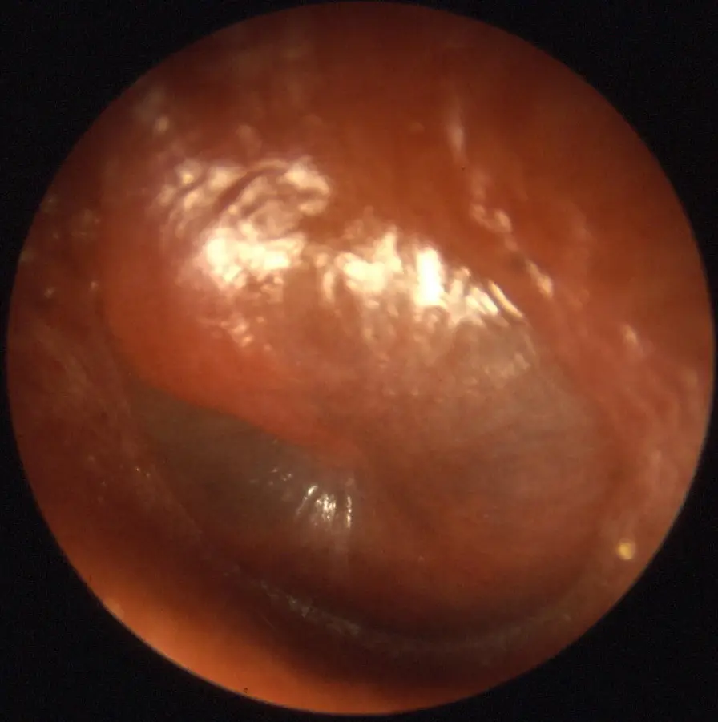
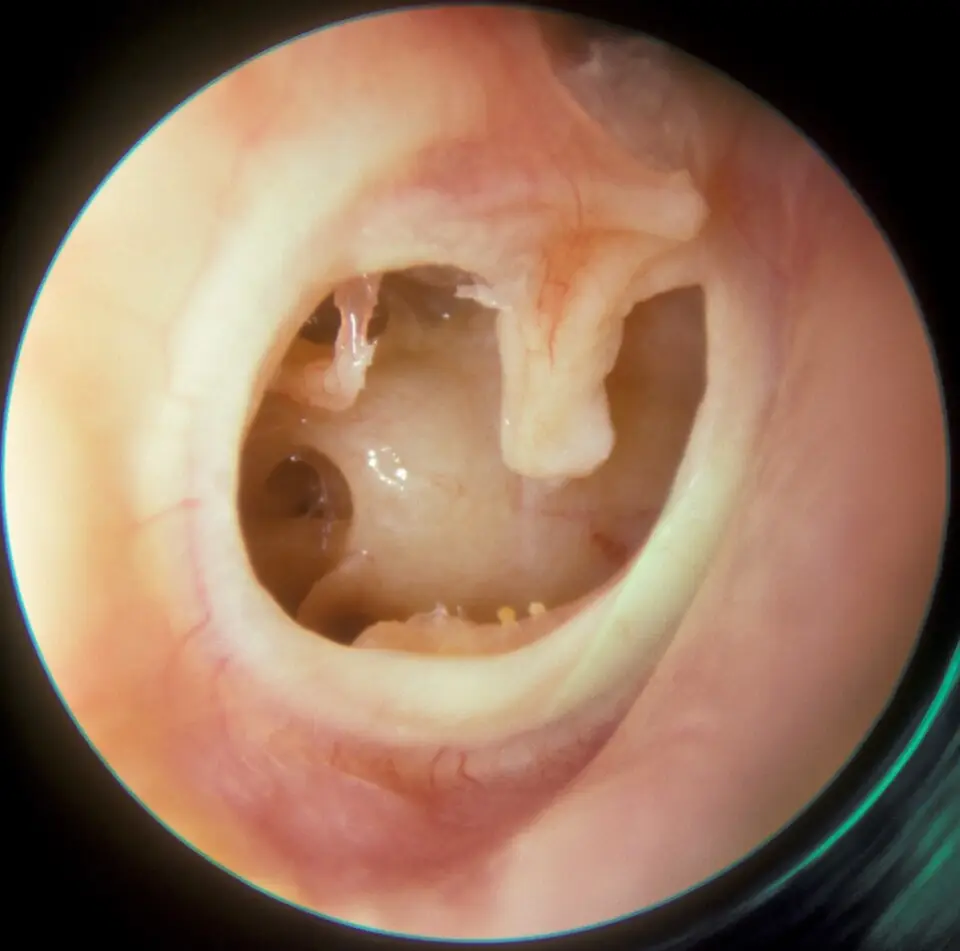

DX.2 — Otite moyenne aiguë perforée
L'otite moyenne aiguë perforée est la rupture du tympan sous la pression du pus d'une otite moyenne, qui produit une otorrhée purulenteS3. Elle impose un antibiotique oral immédiat à tout âge, interdit les gouttes ototoxiques et oblige à exclure la mastoïditeS1S18S3.
1. Définition
La Société suisse d'infectiologie (SSI), dans sa directive renouvelée le 08.05.2024, définit l'otite moyenne aiguë purulente comme la surinfection bactérienne de l'oreille moyenne qui suit une infection des voies respiratoires supérieuresS1. L'otite moyenne aiguë est dite perforée lorsque le pus accumulé derrière le tympan le rompt et s'écoule dans le conduit, ce qui produit une otorrhéeS3S1. Les termes « perforée » et « otorrhée » sont d'ailleurs synonymes dans les indications d'antibiothérapie de la SSIS1.
2. Épidémiologie (Suisse, puis Europe)
L'otite moyenne aiguë est la première cause de consultation des enfants de 0 à 3 ans, selon le service d'ORL des HUG (Hôpitaux universitaires de Genève)S3. Pratiquement tous les enfants ont fait une otite moyenne aiguë purulente à l'âge de trois ans, alors qu'aucune donnée d'incidence n'existe chez l'adulteS2. Les chiffres de la perforation et l'histoire naturelle expliquent pourquoi cette forme mérite une conduite propre.
Chiffres utiles : Suisse, puis Europe
| Donnée | Valeur | Lieu et année | Source |
|---|---|---|---|
| Enfants ayant eu une otite moyenne aiguë purulente à trois ans | Pratiquement 100 % | Genève, HUG, 2021 | S2 |
| Incidence chez l'adulte | Aucune donnée connue | Genève, HUG, 2021 | S2 |
| Complications sévères chez l'adulte : mastoïdite | 82 % des complications | Genève, HUG, 2021 | S2 |
| Complications sévères chez l'adulte : intracrâniennes | 18 % des complications | Genève, HUG, 2021 | S2 |
| Enfants avec otorrhée : réduction de la douleur ou de la fièvre à 3–7 jours sous antibiotique | Différence de 36 %, nombre de sujets à traiter de 3 | Méta-analyse, 1643 enfants, 2006 | S7 |
| Enfants sans otorrhée | Nombre de sujets à traiter de 8 | Méta-analyse, 2006 | S7 |
| Perforation évitée par l'antibiotique contre placebo | Risque relatif 0,43 ; un enfant sur 33 | Cochrane, 2023 | S8 |
Ces chiffres montrent que l'otorrhée sélectionne les enfants qui tirent le plus de bénéfice d'un antibiotique, ce qui fonde l'indication immédiateS7S1. La rareté des complications chez l'adulte n'autorise pas à les ignorer, car la mastoïdite et l'atteinte intracrânienne restent possiblesS2.
Histoire naturelle et terrain
Dans la majorité des cas, en particulier chez l'enfant, l'otite moyenne aiguë guérit spontanémentS3. Les symptômes durent environ trois jours et peuvent persister une semaine, et la plupart des enfants vont mieux en trois jours sans antibiotiqueS6. Après une perforation, le tympan cicatrise en général seul en quelques joursS3.
La maladie survient aussi à l'adolescence et chez l'adulte, souvent pendant ou après un rhumeS3. Chez l'adulte, les recommandations s'extrapolent des études pédiatriques, car l'otite moyenne y est rare et peu étudiéeS2S1. Des écoulements qui récidivent pendant les rhumes et après les baignades signent au contraire une otite moyenne chroniqueS4.
3. Physiopathologie
La base anatomique à connaître est une caisse aérée, fermée en dehors par le tympan et drainée vers le rhinopharynx par la trompe auditiveS3. Un rhume bouche la trompe ; le manque de drainage favorise alors la prolifération des germes et la formation de pusS3. La cascade jusqu'à la perforation relie chaque étape à son signe, et le tableau de corrélation la relie à l'examen et au traitement.
Base à connaître : la caisse du tympan et la trompe auditive
Le tympan est une membrane translucide qui sépare le conduit auditif externe de l'oreille moyenneS3. La trompe d'Eustache, ou trompe auditive, est le canal qui draine l'oreille moyenne vers l'arrière du nezS3. La mastoïde est un os en triangle, situé derrière l'oreille et creusé de cavités aériennes, vers lequel le pus peut se propagerS3.
La dysfonction de la trompe constitue la cause la plus importante de l'otite moyenne aiguë purulenteS2. Cette anatomie explique la propagation du pus vers la mastoïde, qui produit la mastoïdite, complication la plus redoutéeS3.
Oreille moyenne en coupe
Ce schéma en couleurs de Blausen Medical montre l'oreille en coupe frontale et un agrandissement de la caisse du tympan.

Le lecteur cherche d'abord seul le signe sur le cliché brut (oreille moyenne en coupe).
La copie annotée (oreille moyenne en coupe) porte les repères que la lecture guidée explique.
- Le méat acoustique externe aboutit au tympan ; l'otorrhée de l'otite perforée y apparaît.
- Le tympan, membrane en cône, ferme la caisse ; c'est lui qui se rompt sous la pression du pus.
- La caisse du tympan, en rouge, se remplit de pus pendant l'otite moyenne aiguë.
- Le marteau, premier osselet, s'attache au tympan ; son manche reste visible à l'otoscope quand le tympan est sain.
- La trompe auditive descend vers le rhinopharynx ; son obstruction pendant un rhume bloque le drainage.
- Le schéma ne montre pas la mastoïde, qui prolonge la caisse en arrière et vers le bas.
- Le schéma ne montre pas le rhinopharynx, où s'ouvre la trompe auditive.
Décision. Une otorrhée purulente qui suit une otalgie pendant un rhume signe le passage du pus de la caisse vers le conduit à travers le tympan (point 5, puis point 6).

Le schéma de Blausen Medical est le repère commun de toutes les fenêtres de l'examenS20.
Cascade jusqu'à la perforation
- Amorce. Une infection des voies respiratoires supérieures provoque une inflammation de la muqueuse et bloque la trompe auditiveS3S1.
- Surinfection. Les germes du rhinopharynx, surtout Streptococcus pneumoniae, Haemophilus influenzae et Moraxella catarrhalis, prolifèrent dans la caisseS2.
- Pression. Le pus s'accumule, rend le tympan rouge et bombé, et provoque une otalgie intense avec une oreille bouchéeS1S3.
- Rupture. La pression peut suffire à perforer le tympan, et le pus s'écoule alors vers l'extérieurS3.
Le tympan perforé cicatrise en général seul en quelques jours, ce qui explique que la perforation aiguë soit le plus souvent transitoireS3. Le pus qui coule dans le conduit peut irriter sa peau et provoquer une otite externe secondaire, selon le protocole des HUGS5.
Corrélation : perturbation, examen, traitement
| Perturbation | Signe ou examen qui la montre | Traitement qui la corrige |
|---|---|---|
| Obstruction de la trompe pendant un rhume | Contexte d'infection respiratoire à l'anamnèse S1 | Aucun : décongestionnants et antihistaminiques n'apportent aucun bénéfice S1 |
| Pus sous pression dans la caisse | Tympan rouge et bombé, perte du reflet, niveau liquide S2 | Antalgie chez tous les patients S1 |
| Surinfection bactérienne | Otorrhée purulente, fièvre S2 | Amoxicilline immédiate lorsque l'otite est perforée S1 |
| Rupture du tympan | Pus dans le conduit, perforation visible après nettoyage S2 | Interdiction des gouttes ototoxiques S18 |
| Propagation à la mastoïde | Douleur très aiguë S3, tuméfaction rétro-auriculaire S19 | Hospitalisation, drainage ou mastoïdectomie S3 |
Ce tableau montre que la perforation change deux décisions : elle rend l'antibiotique oral immédiat et elle interdit les gouttes ototoxiquesS1S18.
4. Démarche diagnostique
Le médecin recherche d'abord une complication : mastoïdite, méningite, abcès intracrânien, thrombose d'un sinus veineux ou paralysie faciale, qui imposent l'hôpitalS6S2. Chez le jeune enfant dont l'état général est altéré, il recherche aussi une infection systémiqueS1. Le tableau des diagnostics qui trompent distingue ensuite l'otite perforée des autres otorrhées.
Diagnostics qui trompent : les graves d'abord
| Diagnostic | Élément qui tranche | Piège | Conduite si positif |
|---|---|---|---|
| 🚩 Mastoïdite | Douleur très aiguë S3, rougeur et tuméfaction derrière l'oreille qui décollent le pavillon S19 | L'otorrhée peut masquer l'extension S3 | Hospitalisation, prise en charge chirurgicale urgente S3 |
| 🚩 Complication intracrânienne | Somnolence, signes neurologiques, syndrome méningé S3S6 | Sa rareté chez l'adulte expose à la méconnaître S2 | Hospitalisation en urgence S2 |
| 🚩 Fuite de liquide cérébrospinal | Écoulement clair après un traumatisme ou une chirurgie (sources citées en DX.10) | Le liquide clair n'a pas l'aspect du pus | Bilan spécialisé urgent (DX.10) |
| Otite externe aiguë | Douleur au tragus, conduit inflammatoire, tympan intact S5 | Le pus d'une otite perforée peut créer une otite externe secondaire S5 | Gouttes adaptées au tympan (DX.1) |
| Otite moyenne chronique | Écoulements récidivants pendant les rhumes et les baignades, perte auditive S4 | Elle est peu douloureuse, à l'inverse de l'otite aiguë S4 | Avis ORL, chirurgie réparatrice (DX.3) |
| 🚩 Cholestéatome | Débris de peau dans la caisse, otorrhée chronique S4 | Il détruit progressivement la chaîne ossiculaire S4 | Avis ORL, chirurgie (DX.8) |
| Otite séromuqueuse | Épanchement derrière le tympan sans tympan rouge S1 | Elle n'est pas une otite aiguë et ne relève pas d'un antibiotique S1 | Surveillance |
Un écoulement purulent qui suit une otalgie pendant un rhume oriente fortement vers l'otite moyenne perforéeS3S2.
5. Anamnèse ciblée et drapeaux rouges
L'anamnèse recherche d'abord le contexte : une infection des voies respiratoires supérieures précède ou accompagne l'otite moyenne aiguëS1S3. Elle caractérise ensuite l'otalgie, l'otorrhée, l'hypoacousie, la fièvre et, chez le petit enfant, les signes comportementaux. Elle termine par le terrain et les drapeaux rouges.
Otalgie : caractéristiques et valeur
L'otalgie est le premier symptôme ; elle est forte, ressentie surtout en position couchée, avec une pression d'oreille bouchéeS3. Elle est récente et, chez l'enfant, elle a des équivalents comme le geste de se toucher les oreillesS1. Sa cause est la pression du pus contre le tympan, que l'otoscope voit rouge et bombéS3S1.
L'otalgie est typique lorsqu'elle précède l'écoulement et survient pendant un rhumeS3S2. Une douleur très aiguë qui persiste malgré l'écoulement est atypique ; elle impose de rechercher une mastoïditeS3.
Otorrhée : caractéristiques et valeur
L'écoulement est purulent ; il apparaît lorsque le tympan se perforeS2. Il est typique lorsqu'il suit de peu une otalgie aiguë apparue pendant une infection respiratoireS3S2.
Un écoulement clair après un traumatisme crânien ou une chirurgie est atypique et oriente vers une fuite de liquide cérébrospinal. Un écoulement qui récidive à chaque rhume ou après chaque baignade évoque une otite moyenne chroniqueS4.
Hypoacousie et vertige
Une perte auditive accompagne souvent l'otite moyenne aiguë, car le pus gêne la transmission du son à travers la caisseS3S2. Elle est typique lorsqu'elle accompagne l'otalgie et l'écoulement, car elle partage leur causeS2S3. Des vertiges importants sont atypiques ; ils imposent une consultation urgente, car ils évoquent une labyrinthiteS3S2.
Fièvre : seuil et signification
Chez le jeune enfant, l'otite moyenne aiguë peut provoquer une forte fièvre, supérieure à 38 °CS3. Les signes généraux comme la fièvre peuvent s'associer aux symptômes d'infection respiratoireS1. Chez un jeune enfant dont l'état général est altéré, la fièvre impose de rechercher une infection systémiqueS1.
Signes comportementaux du petit enfant
Le petit enfant exprime son otalgie par des pleurs, des troubles du sommeil ou de l'irritabilitéS3. Il peut aussi se toucher les oreilles, geste que la SSI considère comme un équivalent de l'otalgieS1. Ces signes sont non spécifiques ; seule l'otoscopie confirme le diagnosticS2.
Terrain : questions et raisons
| Question | Raison |
|---|---|
| Âge de moins de deux ans ? Atteinte des deux oreilles ? | L'otite bilatérale avant deux ans justifie aussi un antibiotique immédiat S1 |
| Antibiotique dans les 30 derniers jours ? Otites récidivantes ? | Ce contexte fait choisir l'amoxicilline avec acide clavulanique S1 |
| Allergie aux pénicillines, et de quel type ? | Elle oriente vers le céfuroxime ou vers une molécule hors bêta-lactamines S1 |
| Écoulements répétés, baignades mal tolérées ? | Ils évoquent une otite moyenne chronique S4 |
| Grossesse ou allaitement ? | Ils modifient le choix de l'antibiotique selon l'AIPS S9S14 |
Chaque réponse modifie une décision du point 11, ce qui justifie de poser ces questions avant de prescrireS1.
Drapeaux rouges et action immédiate
| Drapeau rouge | Signification | Action immédiate |
|---|---|---|
| 🚩 Tuméfaction douloureuse derrière l'oreille | Mastoïdite S19 | Hospitalisation, avis ORL urgent S3 |
| 🚩 Somnolence ou autre signe neurologique | Complication intracrânienne S3 | Hospitalisation en urgence S2 |
| 🚩 Paralysie faciale | Complication de l'otite S3S6 | Adresser à l'hôpital S6 |
| 🚩 Vertiges importants | Labyrinthite S2 | Consultation urgente S3 |
| 🚩 Jeune enfant avec altération de l'état général | Infection systémique possible S1 | Bilan d'infection systémique S1 |
Toute suspicion de complication doit être adressée immédiatement pour une hospitalisation en urgenceS2.
6. Examen physique ciblé, région par région
L'examen suit l'ordre du geste : l'état général, la région mastoïdienne, le conduit, puis le tympan. Il se termine par l'audition et les nerfs crâniens, car les complications touchent l'oreille interne et le nerf facialS2. L'otoscopie suffit au diagnostic, à condition de voir le tympanS2.
État général et signes méningés
Recherche. Le médecin mesure la température, apprécie la vigilance et recherche une raideur de nuque, car la méningite figure parmi les complicationsS2. Aspect pathologique. Une somnolence ou une altération de l'état général oriente vers une infection systémique ou intracrânienneS3S1.
Région mastoïdienne : la mastoïdite d'abord
Geste. Le médecin recherche à l'inspection et à la palpation une anomalie derrière l'oreille, en comparant avec le côté sain. Aspect normal. Le sillon rétro-auriculaire reste visible et la palpation est indolore. Aspect pathologique. Une douleur, une rougeur et une tuméfaction rétro-auriculaires qui décollent le pavillon évoquent une mastoïditeS19. Celle-ci impose une prise en charge chirurgicale urgenteS3.
Piège. L'otorrhée n'exclut pas une mastoïdite ; elle peut coexister avec un abcès sous-périostéS2.
Conduit : pus et nettoyage
Geste. Le médecin nettoie le conduit pour voir le tympan ; l'aspiration sous microscope est la méthode de référence lorsque le tympan est perforéS5. Aspect attendu. Le conduit contient un écoulement purulent qui vient de la caisseS2.
Piège. L'irrigation est à éviter lorsque la perforation est connue, car elle peut rompre les osselets et léser le système cochléo-vestibulaireS5. Une douleur au tragus associée signe une otite externe secondaire, qui ne change pas la conduite de l'otite moyenneS5.
Tympan : rouge, bombé, puis perforé
Aspect normal. Le tympan sain est une membrane translucide qui sépare le conduit de l'oreille moyenneS3. Avant rupture. Le tympan est rouge et bombé, signe de l'épanchement derrière luiS1. Le médecin peut voir un érythème, un bombement, une perte du reflet et un niveau liquide en transparenceS2.
Tympan d'otite moyenne aiguë avant rupture
Cette photographie otoscopique en couleurs montre un tympan entier, vu à travers le spéculum.

Le lecteur cherche d'abord seul le signe sur le cliché brut (tympan d'otite moyenne aiguë avant rupture).
La copie annotée (tympan d'otite moyenne aiguë avant rupture) porte les repères que la lecture guidée explique.
- La membrane est rouge vif sur toute sa surface, ce qui traduit l'inflammation aiguë.
- Le tympan bombe vers le conduit et efface ses reliefs habituels, sous la pression du pus.
- Les reflets sont irréguliers et le manche du marteau n'est plus visible, ce qui signe la perte de transparence.
- Un tympan rouge sans bombement ne suffit pas, car l'otite externe peut aussi rougir le tympan.
- L'image ne montre pas encore de perforation ; celle-ci apparaît souvent comme un point d'où sourd le pus.
Décision. Un tympan rouge et bombé confirme l'otite moyenne aiguë ; sans perforation, l'antibiotique peut être différé selon l'âge (point 11).

La photographie de Welleschik montre le stade qui précède la ruptureS21.
Après rupture. Le médecin voit un écoulement et une perforation, parfois masquée par le pusS2. Un tympan invisible derrière le pus est traité comme perforé, ce qui interdit Ciproxin® HCS17.
Perforation subtotale du tympan droit
Cette photographie otoscopique en couleurs montre un tympan droit largement perforé après une otite moyenne aiguë sévère, à distance de l'épisode.

Le lecteur cherche d'abord seul le signe sur le cliché brut (perforation subtotale du tympan droit).
La copie annotée (perforation subtotale du tympan droit) porte les repères que la lecture guidée explique.
- Le bord de la perforation dessine un anneau blanc ; le tympan restant est épaissi.
- Le manche du marteau pend dans la perforation, privé de la membrane qui l'entourait.
- La muqueuse de la caisse se voit directement à travers la perforation, sans écoulement.
- Une niche sombre de la paroi interne de la caisse apparaît, ce qui prouve que le tympan manque à cet endroit.
- Cette perforation est sèche et ancienne ; la perforation aiguë est souvent petite et noyée dans le pus.
- Une perforation qui ne se ferme pas évoque une otite moyenne chronique (DX.3).
Décision. Une perforation qui persiste après l'épisode impose un avis ORL, car elle relève d'une réparation chirurgicale (point 11.D).
La photographie de Michael Hawke montre une séquelle de perforation après une otite sévèreS22.
Audition : dépistage
Geste. Le médecin dépiste l'audition de chaque oreille, car l'hypoacousie fait partie du tableauS2. Évolution attendue. La perte auditive doit disparaître avec la guérison, car une perte persistante figure parmi les complicationsS3. Piège. Une perte auditive brutale avec des vertiges oriente vers une labyrinthite, qui impose une évaluation urgenteS2S3.
Nerfs crâniens : le facial
Geste. Le médecin fait plisser le front, fermer les yeux et sourire, afin de tester le nerf facial. Aspect pathologique. Une paralysie faciale peut accompagner une mastoïdite et impose une consultation d'urgenceS2S3. Le NICE (National Institute for Health and Care Excellence) range aussi la paralysie faciale parmi les complications qui imposent l'hôpitalS6.
7. Approche syndromique
Le tableau se lit en quatre syndromes : 7.1 infection respiratoire, 7.2 otite moyenne sous pression, 7.3 perforation et otorrhée et 7.4 complicationS1S2. La séquence des trois premiers syndromes raconte l'histoire de la maladie, tandis que le quatrième impose l'hôpitalS2.
| Syndrome | Signes fonctionnels | Signes physiques |
|---|---|---|
| 7.1 Infection respiratoire | Rhume, toux, mal de gorge S2 | Rhinite, fièvre possible S1 |
| 7.2 Otite sous pression | Otalgie, oreille bouchée S3 | Tympan rouge et bombé S1 |
| 7.3 Perforation et otorrhée | Écoulement de pus S3 | Pus dans le conduit, perforation S2 |
| 7.4 Complication | Douleur très aiguë, vertige, somnolence S3 | Tuméfaction rétro-auriculaire S19, paralysie faciale S3 |
7.1 Syndrome d'infection respiratoire
Ce syndrome précède l'otite : une infection des voies respiratoires supérieures, comme un rhume, bouche la trompe auditiveS3. Il se recherche à l'anamnèse et à l'examen du nez et de la gorge. Il explique que l'otite survienne souvent pendant le rhume ou juste aprèsS3.
7.2 Syndrome d'otite moyenne sous pression
Ce syndrome associe une otalgie récente à un tympan rouge et bombé, qui traduit l'épanchement rétro-tympaniqueS1. Il se recherche à l'otoscope, et son mécanisme tient à l'accumulation de pus dans une caisse qui ne se draine plusS3. Il distingue l'otite aiguë de l'otite séromuqueuse, dont le tympan n'est pas rougeS1.
7.3 Syndrome de perforation et d'otorrhée
Ce syndrome associe un écoulement purulent dans le conduit et une perforation visible ou masquée par le pusS2. Il se recherche après un nettoyage doux du conduit, car le pus peut cacher la perforation. Son mécanisme est la rupture du tympan sous la pression du pusS3.
Ce syndrome change la conduite, car l'otite perforée fait partie des deux situations où l'antibiotique apporte un bénéficeS1.
7.4 Syndrome de complication
Les complications sévères, très rares chez l'adulte, comprennent la mastoïdite, parfois avec paralysie faciale, l'abcès sous-périosté et la labyrinthiteS2. Les complications intracrâniennes comprennent la méningite, l'abcès intracrânien et la thrombose d'un sinus veineuxS2. Elles se recherchent par l'examen de la mastoïde, des nerfs crâniens et de la vigilanceS3.
8. Diagnostic positif et critères
Le diagnostic se pose facilement par l'anamnèse et l'otoscopie, sans examen complémentaireS2. Les critères de la SSI associent une otalgie récente à un tympan rouge et bombé ; la perforation s'y ajoute par l'otorrhéeS1. Les limites du diagnostic disent ce qui ne suffit pas.
Critères diagnostiques (SSI, 2024)
| Critère | Contenu | Exigence |
|---|---|---|
| Otalgie | Douleur récente de l'oreille ou ses équivalents, comme l'enfant qui se touche les oreilles S1 | Obligatoire |
| Otoscopie | Tympan rouge, donc inflammé, et bombé, donc épanchement rétro-tympanique S1 | Obligatoire |
| Signes généraux | Fièvre possible, avec des symptômes d'infection respiratoire S1 | Facultatif |
| Perforation | Otorrhée purulente et perforation visible ou supposée S1S2 | Définit la forme perforée |
Le diagnostic de forme perforée exige que le pus vienne de la caisse ; un écoulement venu de la peau du conduit relève de l'otite externeS5.
Ce qui ne suffit pas
Un tympan rouge sans bombement ne suffit pas, car l'érythème tympanique peut aussi accompagner une otite externeS1S5. Un épanchement sans signe inflammatoire signe une otite séromuqueuse, qui n'est pas une otite aiguëS1. Une otorrhée sans otalgie récente ni infection respiratoire oriente vers une otite chronique ou une autre causeS4.
9. Examens complémentaires
Le gold standard est clinique : l'otoscopie du tympan, après nettoyage du conduit si le pus le cacheS2. Les analyses de sang et microbiologiques ne sont habituellement pas utiles, sauf chez le nouveau-néS1. Les examens réservés aux situations particulières répondent à une complication ou à un échec.
Examens réservés aux situations particulières
| Situation | Examen | Interprétation et conduite |
|---|---|---|
| Nouveau-né | Analyses de sang et microbiologiques S1 | Elles guident la recherche d'une infection systémique S1 |
| Jeune enfant avec altération de l'état général | Bilan d'infection systémique S1 | Un résultat anormal impose l'hospitalisation S1 |
| Suspicion de mastoïdite ou de complication intracrânienne | Bilan hospitalier S2 | Toute suspicion impose l'hospitalisation en urgence S2 |
| Écoulement persistant ou récidivant | Examen ORL et audiométrie S4 | Une perforation persistante relève d'une réparation chirurgicale S4 |
Le prélèvement de l'écoulement n'est pas systématique ; la directive suisse ne le demande pas dans l'otite perforée simpleS1. L'imagerie se réserve aux complications et ne retarde jamais l'hospitalisationS2.
10. Arbre décisionnel
L'arbre place la complication en tête, puis la perforation, qui décide de l'antibiotique immédiatS1S2.
- Si une mastoïdite, une méningite, un abcès intracrânien, une thrombose de sinus ou une paralysie faciale est suspecté, alors le patient est adressé en urgence à l'hôpitalS6S2.
- Si un jeune enfant a un état général altéré, alors le médecin recherche une infection systémiqueS1.
- Si l'otite est perforée, avec otorrhée, alors l'antibiotique oral est prescrit immédiatement, avec une antalgieS1.
- Si l'otite est bilatérale avant deux ans, alors l'antibiotique est aussi immédiatS1.
- Sinon, l'antibiotique peut être différé de 48 à 72 heures après deux ans, et de 24 à 48 heures avant deux ansS1.
- Si l'amoxicilline n'a pas répondu après 72 heures, alors l'amoxicilline avec acide clavulanique remplace l'amoxicillineS1.
- Si l'écoulement persiste ou récidive après l'épisode, alors le médecin demande un avis ORL pour une otite moyenne chroniqueS4.
11. Prise en charge selon les recommandations suisses
11.A But. Le traitement soulage la douleur et raccourcit les symptômes, car l'antibiotique réduit chez l'enfant avec otorrhée la douleur ou la fièvre à 3–7 joursS7. Il vise aussi la cicatrisation du tympan, qui survient en général seule en quelques joursS3.
11.B Moyens. La conduite chronologique d'urgence concerne toute complication. L'antalgie concerne tous les patients, et l'antibiotique immédiat concerne toute otite perforéeS1. Les gouttes auriculaires posent un piège propre à la perforation.
Urgence — conduite chronologique (otite moyenne aiguë compliquée)
- Minutes. Le médecin recherche la tuméfaction rétro-auriculaire, la paralysie faciale, le vertige important et la somnolenceS19S3.
- Première heure. Toute suspicion de complication est adressée immédiatement pour une hospitalisation en urgenceS2.
- Premières heures. L'équipe hospitalière confirme la complication et décide du geste chirurgicalS3.
- Jour même. Une mastoïdite sans complication peut relever d'un drainage transtympanique avec pose d'un drainS3.
- Jours suivants. Une forme plus grave relève d'une mastoïdectomie, suivie de trois à cinq jours d'hospitalisation et d'une dizaine de jours d'antibiotiqueS3.
Le piège qui fait perdre du temps consiste à croire qu'un écoulement soulage et guérit ; une douleur très aiguë persistante impose de chercher la mastoïditeS3.
Antalgie : pour tous
Le paracétamol ou l'ibuprofène soulagent la douleur chez tous les patients, selon la directive de la SSIS1. Le NICE recommande des doses régulières, adaptées à l'âge ou au poids, et la dose maximale en cas de douleur sévèreS6. Les décongestionnants et les antihistaminiques n'apportent aucun bénéfice et ne sont pas recommandésS1.
Chez l'enfant, les fiches ibuprofène en suspension et paracétamol en sirop donnent les doses de l'AIPS. Chez l'adulte, les doses figurent dans les fiches de l'ibuprofène et du paracétamol de DX.1.
Antibiotique immédiat : molécule, dose et durée
| Situation | Molécule de la SSI | Durée | Fiche |
|---|---|---|---|
| Enfant, première intention | Amoxicilline, 25 mg/kg toutes les 12 heures, hors AIPS pour le fractionnement S1 | 10 jours si perforation S1 | Fiche |
| Adulte, première intention | Amoxicilline, 1 g toutes les 8 heures S1S9 | 5 jours S1 | Fiche |
| Antibiotique récent, otites récidivantes, pneumocoque résistant, échec à 72 heures | Amoxicilline avec acide clavulanique à haute dose d'amoxicilline S1 | 5 à 7 jours chez l'adulte S2 | Fiche |
| Allergie à la pénicilline, céphalosporines possibles | Céfuroxime S1 | 5 à 7 jours chez l'adulte S2 | Fiche |
| Allergie à toutes les bêta-lactamines, enfant | Clarithromycine S1 | Au moins 10 jours selon l'AIPS S13 | Fiche |
| Allergie à toutes les bêta-lactamines, adulte | Cotrimoxazole S1 | 5 à 7 jours S2 | Fiche |
Le bénéfice de l'antibiotique est démontré seulement dans deux groupes : l'otite perforée et l'otite bilatérale de l'enfant de moins de deux ansS1. La méta-analyse de Rovers montre, chez l'enfant avec otorrhée, un nombre de sujets à traiter de 3, contre 8 sans otorrhéeS7. Les antibiotiques augmentent toutefois les vomissements, les diarrhées et les éruptions, avec un événement pour 14 enfants traitésS8.
Chez l'adulte, la stratégie des HUG réserve l'antibiotique immédiat à l'otite perforée, et la SSI confirme cette indication à tout âgeS2S1. La page d'information des HUG indique que la majorité des adultes reçoit un antibiotique ; pour la forme perforée, toutes ces sources convergentS3S1.
Gouttes auriculaires : le piège de la perforation
L'AIPS de Ciproxin® HC le contre-indique en cas de perforation connue ou supposée, et précise qu'il n'est pas indiqué dans l'otite moyenneS17. L'AIPS de Panotile mentionne l'otite moyenne aiguë dans ses indications, mais le contre-indique lors d'une perforation, à cause du risque de surditéS18. Une otite moyenne perforée exclut donc ces deux préparations, même si l'une d'elles cite l'otite moyenneS18S17.
Le NICE limite aussi les gouttes antalgiques aux otites sans perforation ni otorrhéeS6. Le protocole des HUG demande, en cas de perforation, un antibiotique local non ototoxique choisi avec l'ORL, ce qui concerne l'otite externe secondaireS5.
Les situations spéciales adaptent ce schéma à la grossesse, à l'allaitement et à l'insuffisance rénale.
Situations spéciales
Grossesse. L'AIPS de l'amoxicilline impose la prudence pendant la grossesse, faute d'étude contrôléeS9. L'AIPS de l'amoxicilline avec acide clavulanique la réserve aux cas de nécessité absolue, à cause d'un risque d'entérocolite nécrosante néonataleS10. Le cotrimoxazole est contre-indiqué au troisième trimestre, et la clarithromycine expose à des effets embryo-fœtaux possiblesS14S13.
Allaitement. L'AIPS d'Amoxi-Mepha® déconseille l'administration pendant l'allaitement, car l'amoxicilline passe dans le laitS9. L'AIPS de Zinat® ne recommande pas le céfuroxime pendant l'allaitement, car il passe en faibles quantités dans le laitS12.
Insuffisance rénale. L'amoxicilline avec acide clavulanique passe à 625 mg toutes les 12 heures lorsque la clairance de la créatinine est entre 10 et 30 mL/minS10. Le cotrimoxazole se donne à demi-dose entre 15 et 30 mL/min et devient contre-indiqué au-dessous de 15 mL/minS14.
11.C Surveillance. Le patient consulte de nouveau si les symptômes s'aggravent ou ne s'améliorent pasS1. Sous amoxicilline, l'absence de réponse après 72 heures impose le passage à l'amoxicilline avec acide clavulaniqueS1.
11.D Pronostic. Le tympan perforé cicatrise en général seul en quelques jours, et les complications graves restent raresS3. Le relevé des critères de guérison et de sortie précise quand l'épisode se termine.
Critères de guérison et de sortie
- L'otalgie a disparu, ce qui signe la fin de la pression dans la caisseS3.
- L'écoulement s'est tari, et le conduit est sec à l'otoscopieS3.
- Le tympan a cicatrisé, ce qui survient en général en quelques joursS3.
- L'audition est revenue, car une perte auditive persistante figure parmi les complicationsS3.
- Une perforation qui persiste ou un écoulement qui récidive relève d'un avis ORL pour une otite moyenne chroniqueS4.
Amoxicilline — Amoxi-Mepha® (n° 44911)
| Rubrique | Contenu de l'AIPS |
|---|---|
| Indication | Infections à germes sensibles ; la SSI la retient en première intention dans l'otite moyenne aiguë S9S1 |
| Dose AIPS, adulte et enfant de plus de 40 kg | 1500 à 3000 mg par jour en 3 à 4 prises ; dose maximale de 4000 à 6000 mg par jour S9 |
| Dose AIPS, enfant jusqu'à 40 kg | 50 à 100 mg/kg par jour en 3 à 4 prises ; dose journalière maximale de 2000 mg ; dose unitaire maximale de 50 mg/kg S9 |
| Contre-indications | Hypersensibilité aux pénicillines ou aux céphalosporines ; mononucléose et leucémie lymphoïde, à cause d'un exanthème dans plus de 90 % des cas S9 |
| Grossesse et allaitement | Prudence pendant la grossesse ; pas d'administration pendant l'allaitement, ou sevrage si le traitement est nécessaire S9 |
La SSI prescrit 1 g toutes les 8 heures chez l'adulte, soit 3000 mg par jour, dose comprise dans la fourchette générale de l'AIPSS1S9. Chez l'enfant, la SSI donne 25 mg/kg toutes les 12 heures, soit 50 mg/kg par jourS1S9. L'AIPS répartit cette dose en 3 à 4 prises ; la conduite enseignée suit le rythme de la SSI en 2 prises, hors AIPS pour le fractionnementS9. L'AIPS demande de poursuivre le traitement 48 à 72 heures après l'obtention de l'effet cliniqueS9.
Amoxicilline et acide clavulanique — Co-Amoxi-Mepha® (n° 53995 et 53982)
| Rubrique | Contenu de l'AIPS |
|---|---|
| Indication | Infections à germes sensibles ; la SSI la réserve à l'antibiotique récent, aux récidives, au pneumocoque résistant et à l'échec de l'amoxicilline S1S10 |
| Dose AIPS, adulte | 3 fois 625 mg par jour ; 2 fois 1 g dans certaines infections ; au besoin jusqu'à 3 fois 1 g par jour au maximum S10 |
| Dose AIPS, enfant, suspension 457 | Otite moyenne après deux ans : 51 à 80 mg/kg par jour en 2 prises ; avant deux ans : 29 à 51 mg/kg par jour en 2 prises S11 |
| Contre-indications | Hypersensibilité aux pénicillines et aux céphalosporines ; ictère ou trouble hépatique lors d'un traitement antérieur S10 |
| Grossesse et allaitement | Grossesse : « Co-Amoxi-Mepha ne devrait donc être utilisé pendant la grossesse qu'en cas de nécessité absolue » ; allaitement : « des réactions d'hypersensibilité sont possibles chez les nouveau-nés sensibles » ; « Il ne faudrait donc pas allaiter pendant le traitement par Co-Amoxi-Mepha » S10 |
La SSI donne 40 mg/kg toutes les 12 heures chez l'enfant, soit 80 mg/kg par jour d'amoxicilline, et 1 g toutes les 8 heures chez l'adulteS1S10. Cette dose correspond à la borne haute de l'AIPS après deux ansS11S1. Avant deux ans, l'AIPS s'arrête à 51 mg/kg par jour, et la conduite enseignée suit cette limiteS11.
Céfuroxime axétil — Zinat® (n° 49460)
| Rubrique | Contenu de l'AIPS |
|---|---|
| Indication | Otite moyenne aiguë, parmi d'autres infections ; la SSI la retient en cas d'allergie à la pénicilline sans contre-indication aux céphalosporines S12S1 |
| Dose AIPS, adulte et adolescent de plus de 12 ans | 500 mg deux fois par jour, toutes les 12 heures S12 |
| Dose AIPS, enfant de 3 mois à 12 ans | 15 mg/kg deux fois par jour, jusqu'à 1000 mg par jour au maximum S12 |
| Durée | 7 jours en règle, de 5 à 10 jours selon la gravité S12 |
| Contre-indications | Hypersensibilité aux céphalosporines ; hypersensibilité sévère, comme une anaphylaxie, à une autre bêta-lactamine S12 |
| Grossesse et allaitement | Grossesse : seulement si clairement nécessaire ; allaitement : utilisation non recommandée S12 |
Les doses de la SSI, 15 mg/kg toutes les 12 heures chez l'enfant et 500 mg toutes les 12 heures chez l'adulte, concordent avec celles de l'AIPSS1S12. Une allergie anaphylactique à la pénicilline interdit le céfuroxime, ce qui renvoie aux molécules hors bêta-lactaminesS12.
Clarithromycine — Clarithromycin-Mepha® suspension (n° 57192)
| Rubrique | Contenu de l'AIPS |
|---|---|
| Indication | Infections à germes sensibles, dont l'otite moyenne aiguë ; la SSI la retient chez l'enfant allergique à toutes les bêta-lactamines S13S1 |
| Dose AIPS, enfant de 6 mois à 12 ans | 15 mg/kg par jour en deux prises de 7,5 mg/kg ; dose maximale de 1000 mg par jour S13 |
| Durée | Au moins 10 jours dans l'otite moyenne aiguë S13 |
| Contre-indications | Hypersensibilité aux macrolides ; association à des médicaments qui allongent l'intervalle QT, comme la dompéridone, la quétiapine ou le pimozide S13 |
| Insuffisance rénale | Demi-dose lorsque la clairance de la créatinine est inférieure à 30 mL/min S13 |
| Grossesse et allaitement | Grossesse : « Clarithromycin-Mepha ne doit pas être administré, sauf nécessité absolue » ; allaitement : « la mère s'abstiendra d'allaiter pendant le traitement par Clarithromycin-Mepha ainsi qu'un jour après l'arrêt du traitement » S13 |
La dose de la SSI, 7,5 mg/kg toutes les 12 heures, correspond à celle de l'AIPSS1S13. La suspension est destinée à l'enfant et ne devrait pas être administrée à l'adulte, selon son AIPSS13.
Triméthoprime et sulfaméthoxazole — Bactrim® forte (n° 48306)
| Rubrique | Contenu de l'AIPS |
|---|---|
| Indication | Infections des voies respiratoires et des oreilles, dont l'otite moyenne, après évaluation du rapport bénéfice-risque S14 |
| Dose AIPS, adulte et enfant de plus de 12 ans | Un comprimé forte, soit 160 mg de triméthoprime et 800 mg de sulfaméthoxazole, matin et soir S14 |
| Contre-indications | Hypersensibilité aux sulfamides, antécédent de syndrome de Stevens-Johnson, déficit en G6PD, insuffisance rénale sévère, troisième trimestre de grossesse S14 |
| Grossesse et allaitement | Grossesse : seulement si le bénéfice dépasse nettement le risque ; test de grossesse avant traitement chez la femme qui planifie une grossesse ; allaitement : « il convient de peser soigneusement le bénéfice attendu pour la mère face aux risques encourus par le nourrisson (ictère nucléaire, hypersensibilité) » S14 |
| Précautions | Arrêt immédiat au premier signe d'exanthème ou d'atteinte hématologique S14 |
La dose de la SSI chez l'adulte allergique à toutes les bêta-lactamines, 160 mg de triméthoprime et 800 mg de sulfaméthoxazole toutes les 12 heures, correspond à la posologie habituelle de l'AIPSS1S14. Le comprimé forte ne convient pas à l'enfant, ce qui explique le choix de la clarithromycine dans ce groupeS14S1.
Ibuprofène — Algifor® Junior suspension (n° 56046)
| Rubrique | Contenu de l'AIPS |
|---|---|
| Indication | Douleur et fièvre de l'enfant ; la SSI retient l'ibuprofène dans l'antalgie de l'otite S15S1 |
| Dose AIPS | 20 à 30 mg/kg par jour en 3 à 4 prises, sans dépasser 30 mg/kg par jour ; intervalle de 6 à 8 heures S15 |
| Exemple | Enfant de 10 à 15 kg : 200 à 300 mg d'ibuprofène par jour S15 |
| Contre-indications | Nourrisson de moins de 6 mois ou de moins de 5 kg, ulcère ou saignement digestif, maladie inflammatoire intestinale, troisième trimestre de grossesse S15 |
| Grossesse et allaitement | Premier et deuxième trimestres : « Algifor Junior ne doit être administré qu'en cas de nécessité absolue » ; allaitement : « l'ibuprofène ne doit donc pas être administré aux femmes qui allaitent. Si le traitement s'avère indispensable, il convient alors de nourrir l'enfant au biberon » S15 |
Le flacon s'agite avant chaque prise, car il s'agit d'une suspension dosée à la seringue graduéeS15.
Paracétamol — DAFALGAN® enfant, sirop (n° 43838)
| Rubrique | Contenu de l'AIPS |
|---|---|
| Indication | Douleur et fièvre de l'enfant ; la SSI retient le paracétamol dans l'antalgie de l'otite S16S1 |
| Dose AIPS | 15 mg/kg par prise, 3 à 4 prises par jour, avec un intervalle de 6 à 8 heures S16 |
| Dose maximale | 75 mg/kg par jour ; 2000 mg par jour entre 9 et 12 ans S16 |
| Contre-indications | Insuffisance hépatique grave, hépatite aiguë, maladie de Gilbert, hypersensibilité S16 |
| Grossesse et allaitement | Grossesse : « En cas de nécessité clinique, le paracétamol peut être pris ou utilisé pendant la grossesse » ; allaitement : « Bien que l'utilisation du paracétamol soit considérée comme compatible avec l'allaitement, la prudence est de mise lors de l'utilisation du Dafalgan pendant l'allaitement » S16 |
Sans avis médical, l'usage continu chez l'enfant jusqu'à 12 ans ne dépasse pas trois jours, selon l'AIPSS16. Un surdosage peut entraîner de très graves lésions hépatiques, d'où la vérification des autres médicaments contenant du paracétamolS16.
12. Prévention
Prévention primaire. L'information du patient et des parents est un élément fondamental de la prescription différée, qui limite les antibiotiques inutilesS1. La fiche « Bien utiliser les antibiotiques » de pharmaSuisse, de la FMH et de l'Office fédéral de la santé publique permet cette informationS1.
Prévention secondaire. Le patient revient sans attendre si les symptômes s'aggravent ou ne s'améliorent pas, ce qui permet de dépister tôt une complicationS1S6. La surveillance de la vigilance, de la région mastoïdienne et du nerf facial détecte la mastoïdite et la paralysie facialeS3.
Prévention tertiaire. Une perforation qui ne se ferme pas expose à des écoulements à chaque rhume ou baignade, ce qui justifie de vérifier la cicatrisation du tympanS4. Ce lien avec le point 2 est direct : la fréquence de l'otite chez le jeune enfant rend ce suivi utileS3.
13. Points clés
- Une otorrhée purulente qui suit une otalgie pendant un rhume signe une otite moyenne aiguë perforéeS3S2.
- L'otite perforée impose un antibiotique oral immédiat, à tout âge, avec une antalgieS1.
- L'amoxicilline reste le premier choix ; l'enfant la reçoit pendant dix jours lorsque le tympan est perforéS1.
- Une perforation connue ou supposée interdit Ciproxin® HC et PanotileS17S18.
- Une tuméfaction rétro-auriculaire, une paralysie faciale ou une somnolence imposent l'hospitalisation en urgenceS19S3S2.
14. Pièges et questions fréquentes à l'examen fédéral suisse
Les questions d'examen portent sur les confusions d'indication, de dose, de gouttes et de gravité, avec un renvoi au point qui les fonde.
Questions d'examen et réponses
| Question | Réponse | Raison |
|---|---|---|
| Un enfant de 4 ans a une otalgie depuis hier et du pus dans le conduit. Peut-on différer l'antibiotique ? | Non | L'otite perforée impose un antibiotique immédiat (point 11) S1 |
| Combien de temps traiter cet enfant par amoxicilline ? | 10 jours | La SSI demande 10 jours si le tympan est perforé (point 11) S1 |
| Quelle dose d'amoxicilline chez l'adulte ? | 1 g toutes les 8 heures pendant 5 jours S1 | Dose de la SSI, comprise dans l'AIPS (fiche) S1S9 |
| Peut-on ajouter Panotile parce que son AIPS cite l'otite moyenne ? | Non | L'AIPS le contre-indique en cas de perforation (point 11) S18 |
| Faut-il prescrire un décongestionnant nasal ? | Non | La SSI ne lui reconnaît aucun bénéfice (point 11) S1 |
| L'amoxicilline ne fait pas effet après 72 heures. Que faire ? | Passer à l'amoxicilline avec acide clavulanique | Échec de l'amoxicilline (point 10) S1 |
| Un adulte fait une anaphylaxie à la pénicilline. Quelle molécule ? | Cotrimoxazole | Toutes les bêta-lactamines sont alors contre-indiquées (fiche) S1S12 |
| L'otorrhée continue à faire mal et une tuméfaction apparaît derrière l'oreille. Que suspecter ? | Une mastoïdite | Elle impose une prise en charge chirurgicale urgente (point 4) S19S3 |
| Un écoulement revient à chaque baignade depuis des mois. S'agit-il d'une otite aiguë ? | Non | Le tableau évoque une otite moyenne chronique (point 4) S4 |
Ces questions servent à l'entraînement ; elles ne reproduisent aucun sujet officiel de l'examen fédéral.
Sources
Toutes les sources ont été lues le 12.11.2026 (Europe/Zurich).
- [S1] Société suisse d'infectiologie (SSI). Otite moyenne aiguë, directive guidelines.ch n° 2406, auteurs Berger C, Boillat-Blanco N, Albrich W, Kronenberg A, validée et renouvelée le 08.05.2024, lue le 12.11.2026. https://ssi.guidelines.ch/guideline/2406/fr
- [S2] HUG, Service de médecine de premier recours, Delhaye E, expert Schibler M. Infections des voies respiratoires supérieures, stratégie 2021, chapitre 3.4 « Otite moyenne aiguë », lue le 12.11.2026. https://www.hug.ch/sites/interhug/files/2022-09/strategie-ivrs-2021_jezc-finalisee.pdf
- [S3] HUG, Service d'ORL et chirurgie cervico-faciale. Otite moyenne aiguë et complications de l'otite moyenne aiguë, page d'information, lue le 12.11.2026. https://www.hug.ch/orl-chirurgie-cervico-faciale/otite-moyenne-aigue
- [S4] HUG, Service d'ORL et chirurgie cervico-faciale. Otite moyenne chronique avec et sans cholestéatome, page d'information, lue le 12.11.2026. https://www.hug.ch/orl-chirurgie-cervico-faciale/otite-moyenne-chronique-avec-sans-cholesteatome
- [S5] Hôpitaux universitaires de Genève (HUG), Département de médecine de premier recours, experts ORL Voruz F et Guinand N, auteure Da Graça S. Protocole « Otite externe aiguë (OEA) », version du 14.07.2022, annexes sur la perforation et l'extraction, lu le 12.11.2026. https://www.hug.ch/sites/interhug/files/2022-09/otite_exerne_aigue_14.07.2022.pdf
- [S6] National Institute for Health and Care Excellence (NICE). Otitis media (acute): antimicrobial prescribing, NG91, 2018, amendée en 2022, recommandations lues le 12.11.2026. https://www.nice.org.uk/guidance/ng91/chapter/Recommendations
- [S7] Rovers MM, Glasziou P, Appelman CL et al. Antibiotics for acute otitis media: a meta-analysis with individual patient data. Lancet 2006;368:1429-1435. doi:10.1016/S0140-6736(06)69606-2 (résumé PubMed lu le 12.11.2026). https://doi.org/10.1016/S0140-6736(06)69606-2
- [S8] Venekamp RP, Sanders SL, Glasziou PP, Rovers MM. Antibiotics for acute otitis media in children. Cochrane Database of Systematic Reviews 2023;11:CD000219. doi:10.1002/14651858.CD000219.pub5 (résumé PubMed lu le 12.11.2026). https://doi.org/10.1002/14651858.CD000219.pub5
- [S9] Swissmedic, AIPS Amoxi-Mepha® comprimés pelliculés et granulés pour suspension buvable (amoxicilline), n° 44911, mise à jour septembre 2026, lue le 12.11.2026. https://files.refdata.ch/simis-public-prod/MedicinalDocuments/174c174fbc1a4bcb8daa6f13b5231a20-fr.html
- [S10] Swissmedic, AIPS Co-Amoxi-Mepha® comprimés pelliculés (amoxicilline, acide clavulanique), n° 53995, mise à jour mars 2026, lue le 12.11.2026. https://files.refdata.ch/simis-public-prod/MedicinalDocuments/5fb4441216ee4ce993f9718820ba967c-fr.html
- [S11] Swissmedic, AIPS Co-Amoxi-Mepha® poudre pour suspension buvable (amoxicilline, acide clavulanique), n° 53982, mise à jour août 2026, lue le 12.11.2026. https://files.refdata.ch/simis-public-prod/MedicinalDocuments/4dbfc7a2fc9444f9b676ec7602450513-fr.html
- [S12] Swissmedic, AIPS Zinat® (céfuroxime axétil), n° 49460, mise à jour avril 2023, lue le 12.11.2026. https://files.refdata.ch/simis-public-prod/MedicinalDocuments/951eb1bd630346c19086820afb483cc9-fr.html
- [S13] Swissmedic, AIPS Clarithromycin-Mepha® granulés pour suspension buvable (clarithromycine), n° 57192, mise à jour mai 2026, lue le 12.11.2026. https://files.refdata.ch/simis-public-prod/MedicinalDocuments/37a4d04b3caf4963b514cdf16c5e45e1-fr.html
- [S14] Swissmedic, AIPS Bactrim® forte, comprimés (triméthoprime, sulfaméthoxazole), n° 48306, mise à jour mars 2023, lue le 12.11.2026. https://files.refdata.ch/simis-public-prod/MedicinalDocuments/48ee4e6cb19942b987ce445ab3c93d2a-fr.html
- [S15] Swissmedic, AIPS Algifor® Junior, suspension (ibuprofène), n° 56046, mise à jour janvier 2025, lue le 12.11.2026. https://files.refdata.ch/simis-public-prod/MedicinalDocuments/7c1d565ae1414bc5801452751fffcc29-fr.html
- [S16] Swissmedic, AIPS DAFALGAN® enfant, sirop (paracétamol), n° 43838, mise à jour septembre 2025, lue le 12.11.2026. https://files.refdata.ch/simis-public-prod/MedicinalDocuments/7a077e38e06e42c69de49bde0648bb26-fr.html
- [S17] Swissmedic, AIPS Ciproxin® HC, suspension auriculaire (ciprofloxacine, hydrocortisone), n° 54807, mise à jour mars 2024, lue le 12.11.2026. https://files.refdata.ch/simis-public-prod/MedicinalDocuments/60c59a399aab401fadc6cd1179773b3f-fr.html
- [S18] Swissmedic, AIPS Panotile, gouttes auriculaires (néomycine, polymyxine B, fludrocortisone, lidocaïne), n° 31957, mise à jour mars 2021, lue le 12.11.2026. https://files.refdata.ch/simis-public-prod/MedicinalDocuments/2982497d75d8429f94238a7ee10de662-fr.html
- [S19] NHS (National Health Service, Royaume-Uni). Mastoiditis, page d'information revue le 17.08.2026, lue le 12.11.2026. https://www.nhs.uk/conditions/mastoiditis/
- [S20] Blausen.com staff (BruceBlaus). Blausen 0330 EarAnatomy MiddleEar, schéma en couleurs, licence CC BY 3.0, Wikimedia Commons, consulté le 12.11.2026. https://commons.wikimedia.org/wiki/File:Blausen_0330_EarAnatomy_MiddleEar.png
- [S21] Welleschik B. Otitis media entdifferenziert2, photographie otoscopique, licence CC BY-SA 3.0, Wikimedia Commons, consulté le 12.11.2026. https://commons.wikimedia.org/wiki/File:Otitis_media_entdifferenziert2.jpg
- [S22] Hawke M. Subtotal perforation of the right tympanic membrane, photographie otoscopique, licence CC BY-SA 4.0, Wikimedia Commons, consulté le 12.11.2026. https://commons.wikimedia.org/wiki/File:Subtotal_Perforation_of_the_right_tympanic_membrane.tif
Le contenu reprend les sources citées ; il n'a pas été validé cliniquement par un médecin.